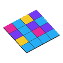

Everything it does
Build mode
Lots, foundations, floor tiles, walls, doors, windows, stairs, elevators, roofs, fences and the paint brush.
See Build →Furnish mode
Home Furnishings for every room, from kitchens to bedrooms and LED strips, and Steventechno's furniture packs.
See Furnish →Streets & Cities
Roads that join themselves, curves, driveways, parking lots, nightclubs, shops and skyscrapers in Public Furnishings.
See Streets & Cities →Play together
Multiplayer limits, live build previews, bulldoze, auto-save, distance level of detail, music and a UI you can rearrange.
See Play together →Get started
Install, the packs it works with, every control on one page and the admin commands.
See Get started →Player manual
The full reference: every tab, hotkey, setting, console command and multiplayer limit, plus troubleshooting.
Read the manual →
Built to be lived in
Doors, gates, curtains and garage doors open. Lights, fans, stoves, showers and fireplaces switch on. Sofas, chairs and stools seat you. Elevators carry you up.